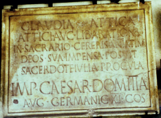

Comprendo para saber
Alumno:
Comprendo para saber
Alumno:
Alfabeto latino o romano
El alfabeto romano, también conocido como alfabeto latino, constituye el sistema de escritura alfabético más usado del mundo. Con algunas modificaciones, es utilizado en la mayoría de las lenguas, como el español, el francés, el alemán, el italiano, el inglés, el turco, el sueco y, en algunas otras más, de América, la Unión Europea, el África Subsahariana y las islas del océano Pacífico.
En el siguiente gráfico se representan los sistemas alfabéticos utilizados en los distintos continentes
Historia
Los romanos tomaron el alfabeto etrusco para escribir latín y de esta manera lo pasaron a todas las lenguas occidentales de Europa. A medida que Roma se convertía en un imperio mundial, asimilaba los logros y descubrimientos de los pueblos que conquistaba, especialmente de los griegos. Estos logros, a su vez, los esparcieron por todo el imperio, desde Bretaña hasta Egipto y desde el Atlántico hasta Mesopotamia.
Cabe destacar que, más allá de su nombre, este alfabeto no ha sido inventado por los romanos. Se trata de un sistema que adoptaron los etruscos, quienes a su vez lo desarrollaron a partir de las letras del alfabeto griego
La escritura fue uno de los factores claves, junto al desarrollo de la agricultura y el sedentarismo, para el devenir de nuestra civilización. Dio la posibilidad a nuestros ancestros de reproducir sus pensamientos, sus conocimientos y, sobre todo, poderlos comunicar. El poder de describir las cosas y propagar sus ideas.
En la época colonial, el alfabeto se extendió por todo el mundo. Fue adoptado por muchas lenguas que no tenían forma escrita y desplazó a otras escrituras. También contribuyó a la cristianización, al ser usado por los misioneros para traducir la Biblia a idiomas no europeos. El alfabeto aumentó su área de difusión por América, África, Oceanía y Asia, siguiendo la expansión del idioma español, el portugués, el inglés, el francés y el holandés.
Estructura del alfabeto latino
El alfabeto romano más antiguo contenía solo 21 letras (sonidos aspirados como th, kh, o ph no los hay en latín). Al principio, se empleaba una dirección de escritura de derecha a izquierda. Algunas inscripciones públicas sobre piedra y metal mostraban separación de palabras por medio de puntos colocados a media altura. Originalmente el alfabeto latino constaba de las siguientes letras: A B C D E F Z H I K L M N O P Q R S T V X.
Se descartaron los nombres de las letras griegas de origen semítico, en favor del familiar abecedarium, que todavía utilizamos. La evolución ulterior se limitó a un aumento en el número de las letras (28 en nuestro alfabeto), alteraciones en la forma y calidad de sonido de ciertas letras, y al desarrollo de distintos estilos caligráficos y nacionales.
Además, solo se utilizaban las letras que hoy en día llamamos mayúsculas. Otros signos ortográficos como puntos, comas, interrogaciones e, incluso, la separación entre palabras, no existían al principio y se fueron desarrollando lentamente. No se utilizaban las tildes. Existían, en cambio, algunos otros signos que veremos más adelante.
La letra C representaba el fonema /g/
La letra I servía tanto para /i/ como para /j/
La letra V también servía para dos sonidos /u/ y /w/
Cabe destacar la ausencia de alguna letra equivalente a la j. Los romanos usaban la i tanto para representar el fonema /i/ como el /j/, por ejemplo, en palabras como Iulius o iustitiae (Julio y justicia respectivamente).
En las lenguas que en la actualidad usan el alfabeto latino, las mayúsculas son empleadas para empezar párrafos o frases y para escribir los nombres propios. Las reglas para el uso de las mayúsculas evolucionaron con el tiempo y según las distintas lenguas. Uno de los principales cambios en la historia del alfabeto romano fue la inclusión de las minúsculas, hacia finales de la Antigüedad. Antes solo se escribía en mayúsculas. La necesidad de poder escribir completamente una letra sin levantar la mano al hacerlo llevó a la creación de las minúsculas, con forma redondeada. En el [siglo XVIII] al adoptarse la «J» y la «U», quedaron establecidas las 26 letras del alfabeto latino básico, tal como las conocemos actualmente.
Los romanos, con el fin de ahorrar espacio, dado el alto costo de la mayoría de los materiales en que escribían, usaban las llamadas ligátúræ, es decir, agrupaciones de letras escritas juntas mediante el uso compartido de un trazo común. Había muchas de ellas: AE podía encontrarse como Æ, y, de manera similar, AN, TR, VM. Muchas otras podían aparecer fundidas en grupos de dos, tres o incluso más letras. Ejemplo:

CLAVDIA · ATTICA
ATTICI · AVC · LIB · A · RATIONIB
IN · SACRARIO · CERERIS · ANTIATINAE
DEOS · SVA · IMPENSA · POSVIT
SACERDOTE · IVLIA · PROCVLA
IMP · CAESAR · DOMITIANO
AVG · GERMANIC · XI · COS
(Nótese la ligadura de NIB al final de la segunda línea, NT y NAE hacia el final de la tercera, y AN al final de la sexta, con una pequeña o dentro de la N)